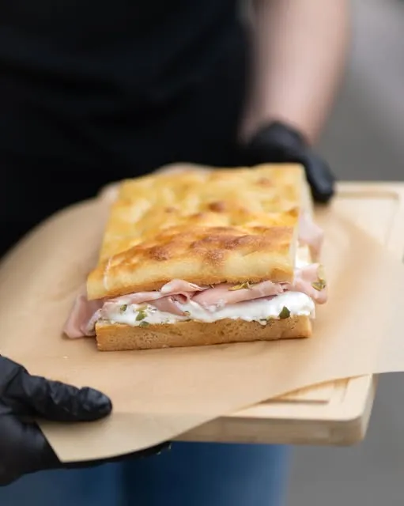

Fresh every day
We knead the dough ourselves and bake it fresh every morning in our own kitchen. What you order, we fill the moment you order it.
Our story
For us, that was focaccia. We're Valentina from Verona and Alessia from Milan, two Italian friends who missed the flavours of home and decided to share them with the city that welcomed us.

In Italy, almost every city has its own focacceria, with its own recipe. You go there for breakfast, a quick lunch, or just a freshly baked slice on the go. That's exactly the place we missed in the Netherlands.
So we both quit our jobs. On 18 June 2026 we opened our own place on Hinthamereinde, right where we fell in love with Den Bosch during our very first visit.
"Once we'd already made one big life change, we thought: why not make another?" Alessia, in indebuurt Den Bosch
The real thing
We knead the dough ourselves and bake it fresh every morning in our own kitchen. What you order, we fill the moment you order it.
The mortadella, stracciatella, truffle cream and even the soft drinks all come from Italy. That's why it tastes like home.
In Italy, the whole family comes together to eat on Sundays. We bring that feeling of warmth and togetherness to Den Bosch.
"I want to know the names of our neighbours and our regulars. And maybe they can teach us some Dutch, by explaining a new word to us every day." Alessia
More than takeaway
Our dream is a cosy lunch spot where you walk in for a focaccia and stay for an Italian espresso from the moka pot, a tiramisù or a cannolo. The coffee corner is ready and waiting; you never need to book.

